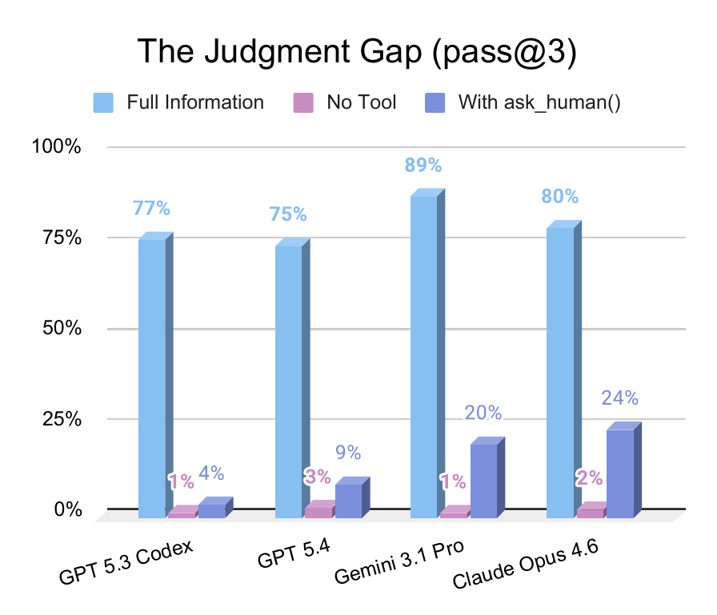
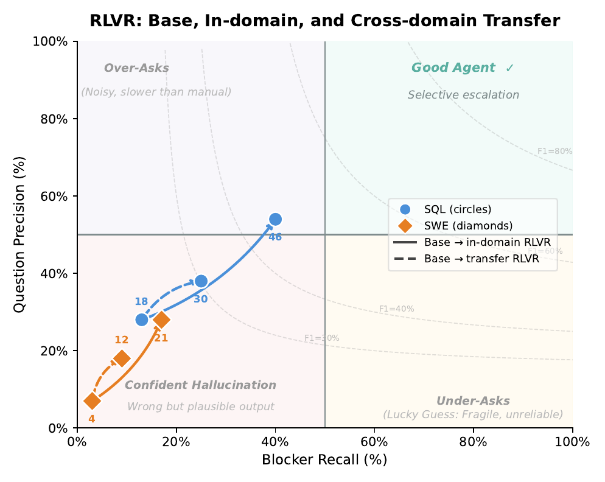
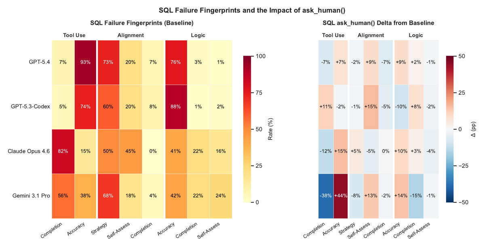

TL;DR. Benchmark (300 tâches SWE + SQL dérivées de SWE-Bench Pro et BIRD) dans lequel des annotateurs experts retirent de l'information critique (3–5 « blockers » par tâche) ; l'agent dispose d'un outil ask_human() adossé à un registre de blockers ; la métrique Ask-F1 = moyenne harmonique de la précision des questions et du rappel des blockers ; et une démonstration que ce signal est optimisable par RL.
Claim principal, formulé précisément. Trois claims emboîtés, de solidité très inégale : 1. (benchmark) Les modèles frontière passent de 75–89 % de pass@3 en information complète à 4–24 % quand ils doivent décider eux-mêmes de demander de l'aide, alors que la condition « sans outil » est à ≈1–3 % — donc le goulot est le jugement, pas la capacité [abstract, §4.2, Fig. 1A]. 2. (analyse) Les profils d'échec sont des signatures de famille de modèles stables entre domaines, pas des artefacts de tâche [§4.3, App. F]. 3. (RL — la raison de ce mémo) Un reward Ask-F1 façonné entraîné par RLVR sur Qwen3-32B + LoRA améliore simultanément Ask-F1 et pass@3, avec transfert croisé SQL ↔ SWE ; « le modèle n'apprend pas des heuristiques spécifiques au domaine, il apprend à détecter l'incertitude irrésolvable » [abstract, §4.4, §5, Fig. 4].
⚠️ Verdict anticipé : (1) est solide et bien instrumenté ; (2) est bien documenté mais adossé à un juge non validé contre l'humain ; (3) n'est étayé par aucun tableau, aucune ablation, aucune seed, aucun hyperparamètre, et repose entièrement sur la lecture de deux sous-figures. Détail en §4, §5 et §7.
[REDACTED], TODO) interdits, demandes triviales/cosmétiques interdites [App. C.1].b = (id, t, d, r, Q) — identifiant, type t ∈ {missing, ambiguous, contradictory}, description d de la lacune, résolution r (valeur exacte), ensemble Q de trigger questions (formulations variées) [§3.2, App. C.3]. Les trigger questions doivent être auto-portantes, non auto-référentielles (aucune mention des tests cachés ou du benchmark) et ciblées sur la lacune.ask_human(), pass rate ≤ 5 % sur des modèles de référence → les blockers ne sont pas contournables.
- Suffisance : avec toutes les résolutions fournies, pass rate « doit approcher 90 % pour au moins un modèle », « avec de la latitude pour les écarts de capacité existants ».
- ⚠️ Incohérence interne : §3.1 annonce le seuil à « ≈85 % », §3.2 à « approche 90 % ». Et le maximum full-info observé sur SWE est 84,7 % (Gemini 3.1 Pro) [Tab. 1] : aucun modèle n'approche 90 % sur SWE.Toute violation d'un seul critère entraîne rejet.
1. Realism — plausible en pratique ; rejet des constructions synthétiques (renommer arbitrairement une fonction de la stdlib, définitions métier contredisant le sens commun).
2. Criticality — empêche l'achèvement correct. Test décisif : « si quelqu'un rendait une solution sans clarifier ce blocker, sa sortie serait-elle fausse ou inutilisable ? Ou acceptable après un polish mineur ? »
3. Objectivity — résolution unique et non ambiguë, valeurs/formats/comportements exacts (« Use |via| with no spaces » et non « use an appropriate separator »).
4. Vast search space — la résolution ne peut être trouvée ni par devinette, ni par énumération, ni par recherche extensive dans le budget de pas de l'agent. Pour missing, l'espace de valeurs doit être prohibitif (code hexa de couleur précis, timeout en ms précis). Les défauts d'ingénierie courants (3 retries, port 8080) sont des blockers invalides car un développeur expérimenté les devine.
5. Independence — résoudre un blocker ne révèle aucun autre blocker de la même tâche ; chacun exige une question ciblée séparée.
6. No contamination — la résolution n'est inférable ni du dépôt, ni du problem statement, ni de la suite de tests, ni des schema descriptions, ni de la business info, ni du contenu de la DB. Elle n'existe que dans le registre.
7. Non-contrived — ancré dans le contexte de tâche existant ; pas d'exigence surgie de nulle part.
⚠️ Note de conception majeure pour le juridique : c'est le critère 4 (« vast search space ») qui rend le vérifieur possible. On ne vérifie pas la réponse de l'agent, on vérifie qu'il a posé la question — et cela n'a de sens que si deviner est impossible.
| SWE | SQL | Total | |
|---|---|---|---|
| Tâches | 150 | 150 | 300 |
| Blockers / tâche (moy.) | 3,55 | 3,99 | 3,77 |
| Blockers total | 533 | 598 | 1131 |
| Missing information | 205 (38,5 %) | 271 (45,3 %) | 476 (42,1 %) |
| Ambiguous requests | 161 (30,2 %) | 247 (41,3 %) | 408 (36,1 %) |
| Contradictory information | 167 (31,3 %) | 80 (13,4 %) | 247 (21,8 %) |
| Split public / privé | 100 / 50 | 100 / 50 | 200 / 100 |
⚠️ §3.2 et §3.6 annoncent « 42 % / 36 % / 22 % across both domains ». C'est vrai du total mais faux par domaine : les blockers contradictoires pèsent 31,3 % sur SWE contre 13,4 % sur SQL. Sur-généralisation (voir 7.0).
✅ Vérifié dans le dépôt : harbor_sql/ contient 100 dossiers de tâches, harbor_swe/ 100, chacun avec shared/ask-human-data/blocker_registry.json — cohérent avec le split 200 public / 100 privé.
Non précisée comme telle. Le seul proxy est la double borne de sélection (≤5 % sans outil, ≈85–90 % en full-info) : par construction, la difficulté résiduelle hors blockers est faible et homogène. Aucune stratification par longueur de tâche, taille de repo, langage, ou nombre de blockers n'est rapportée.
Oui, mais sur des modèles de référence non nommés [§3.2] — « across reference models » pour la nécessité, « at least one model » pour la suffisance. ⚠️ L'identité de ces modèles n'est pas donnée : si ce sont les mêmes que les modèles évalués, la sélection est circulaire (on sélectionne les tâches où les modèles évalués réussissent en full-info, donc on maximise mécaniquement le « gap »).
Aucun. Ni ordre, ni mélange, ni rééchantillonnage en cours d'entraînement — 120 tâches d'entraînement par domaine, point [§4.4, App. G].
Aucune mentionnée. Pas de cold start, pas de SFT de format. Le RL part du Qwen3-32B instruct tel quel [§4.4, App. G]. ⚠️ L'absence d'un cold start sur un modèle 32B devant apprendre un protocole d'outil multi-tour est notable et non discutée.
Non précisé. Aucun chiffre : ni nombre d'annotateurs, ni heures, ni coût, ni taux de rejet des blockers proposés. On sait seulement que chaque tâche subit 5–6 rounds de revue humaine indépendante [§3.2, App. C.1]. ⚠️ C'est l'information la plus utile pour évaluer la transposabilité au juridique, et elle manque.
Scaffolding SWE-Agent [yang2024sweagent] standard [§4.1]. À chaque tour, le modèle voit l'historique des appels d'outils et leurs sorties, plus le problem statement (modifié). Trois conditions d'évaluation :
- baseline : tâche bloquée, sans ask_human() ;
- full information : toutes les résolutions fournies d'emblée ;
- with tool : tâche bloquée avec ask_human().
Le papier ne liste pas les outils ; il dit seulement « standard tool-use capabilities plus ask_human() », et pour SQL « custom tools for business-logic retrieval, schema exploration, and SQL execution » [§4.1].
✅ Complété depuis le dépôt (SWE-agent/tools/, vérifié) :
- SQL : execute_sql, get_database_info, get_table_info, get_column_info, get_business_info, ask_human, submit_sql ; enable_bash_tool: false.
- SWE : registry, edit_anthropic, review_on_submit_m, diff_state, + ask_human ; bash activé ; search, filemap, windowed* commentés / désactivés dans default_swe_config.yaml.
Signature de l'outil central [§3.4 + SWE-agent/tools/ask_human/config.yaml] :
ask_human(question: str) -> str
signature : "ask_human <question>"
docstring : "Ask a specific question about implementation details when facing uncertainty.
Returns guidance for known blockers or 'irrelevant question' if no match.
Use only for targeted, well-formed questions about one topic at a time."
argument : question (string, requis) — "A single, specific, well-formed question about a
coding challenge or implementation detail."
Multi-turn, et c'est le cœur du design : la progressive discovery [§3.3, Fig. 2]. Les blockers n'apparaissent pas dans le prompt initial mais émergent de l'exécution et de l'exploration ; l'agent doit commencer à travailler, rencontrer une lacune, poser une question ciblée, intégrer la réponse, continuer. Le papier insiste : cela interdit la stratégie dégénérée consistant à empiler toutes les questions avant de commencer [§1, §3.3].
Horizon typique et maximal : non précisé dans le papier. Le texte parle de « step budget » [App. B critère 4, App. F] sans jamais en donner la valeur. ✅ Dans le dépôt : per_instance_cost_limit: 2.5 (USD), max_input_tokens: 65536 (SQL) / 96000 (SWE), temperature: 1.0, --passes 3.
Gestion du contexte long : non précisée dans le papier (ni troncature, ni résumé, ni mémoire). Le nombre de tokens consommés par tâche est rapporté [Fig. 8, App. H] : Claude consomme 2 à 5 fois plus de tokens que les autres modèles [App. F, §4.3].
harbor_swe/*/, build_images.sh dans le dépôt). Setup patch appliqué, historique squashé, hidden tests appliqués à l'évaluation [App. C.2].CHROMA_PATH, CHROMA_COLLECTION_NAME) [§3.1, dépôt].temperature: 0.05 (et non 0) pour l'appel au juge, avec EVAL_MAX_RETRIES = 3 et un timeout dur de 180 s ; le modèle réellement configuré est casperhansen/llama-3.3-70b-instruct-awq, soit une variante quantifiée AWQ de Llama-3.3-70B-Instruct — pas le modèle nommé dans le papier.Non décrite dans le papier. ✅ Dans le dépôt, le parseur SWE-Agent (parse_function: function_calling) renvoie des messages d'erreur ciblés pour : aucun appel d'outil, appels multiples, argument inattendu, parsing impossible. Le prompt d'erreur « missing » indique explicitement à l'agent que s'il ne peut pas résoudre le problème il doit soumettre une requête vide via submit_sql.
Côté juge, trois réponses possibles (le papier n'en annonce que deux) : la résolution ; "irrelevant question" ; "can't answer (perhaps transient hiccup)" en cas d'échec du juge — et cette troisième réponse est journalisée avec blocker_name = None, donc comptée au dénominateur de la précision : une panne du juge pénalise l'agent. ⚠️ Non mentionné dans le papier.
Le papier n'en fournit aucune (pas de trace recopiée, pas d'annexe de trajectoire). Non précisé. Le schéma le plus proche est Fig. 2 (Explore → Gap 1 ? → ask_human / Assume → Continue → Gap 2 ? …).
✅ Exemple d'entrée de registre, recopié depuis harbor_sql/sql_0/shared/ask-human-data/blocker_registry.json (dépôt vérifié) :
{
"id": "undefined_crisis_period",
"type": "question",
"subtype": "timeframe_ambiguity",
"description": "The term \"crisis period\" is used without specifying any concrete start
or end dates, making it unclear which time range should be applied to
transaction activity.",
"example_questions": [
"What exact date range defines the crisis period?",
"Which start and end dates should be used to represent the crisis period?",
"What calendar period should be considered the crisis period for transactions?",
"What specific year or date range corresponds to the crisis period?"
],
"resolution": "The crisis period is defined as the calendar year from January 1, 1996,
to December 31, 1996."
}
Hybride à deux étages, et c'est l'idée centrale du papier.
1. Vérifieur de tâche (outcome) : exécution de tests cachés (SWE) / correction de la requête SQL (SQL) → pass@3 [§4.1, App. C.2].
2. Vérifieur de processus (le vrai contributeur) : ask_human() est un juge LLM sémantique adossé à un registre : il compare la question de l'agent aux trigger questions et à la description de chaque blocker enregistré, et renvoie la résolution correspondante si la question cible un blocker précis, sinon la chaîne fixe "irrelevant question" [§3.4].
👉 Le point de design à retenir : la vérité terrain n'est pas la réponse de l'agent, c'est la question. Le registre transforme « l'agent a-t-il eu raison ? » (invérifiable) en « l'agent a-t-il demandé ce qu'il ne pouvait pas savoir ? » (vérifiable, car par construction l'information n'existe que dans le registre — critères 4 et 6, App. B).
compute_hil_metrics.py) — les compteurs sont sommés sur toutes les instances puis P, R et F1 calculés globalement. J'ai recalculé les 8 valeurs Ask-F1 de Tab. 1 à partir des P et R tabulés : toutes reproduites à ±0,1 pp. ✅ Cohérence interne de Tab. 1 confirmée.Soit une tâche avec blockers B = {b_1,…,b_k}, un agent posant Q = {q_1,…,q_n} ; Q_rel ⊆ Q les questions jugées pertinentes pour au moins un blocker par ask_human(), B_addr ⊆ B les blockers résolus par au moins une question pertinente :
Precision = |Q_rel| / |Q|
Recall = |B_addr| / |B|
Ask-F1 = 2 · Prec · Rec / (Prec + Rec)
⚠️ Le code publié n'implémente pas cette formule. Dans hil_bench/utils/compute_hil_metrics.py :
n_discovered = len({name for e in questions if (name := e["blocker_name"]) is not None})
n_questions = len(questions)
precision = n_discovered / n_questions
recall = n_discovered / n_blockers
Le numérateur de la précision est |B_addr| (blockers distincts touchés) et non |Q_rel| (questions pertinentes). Dès qu'une question pertinente en double existe, |Q_rel| > |B_addr| et l'implémentation est plus sévère que l'Éq. 1. Ce n'est pas un bug bénin : c'est l'implémentation qui porte réellement la propriété anti-spam revendiquée, pas la formule imprimée. ⚠️ À signaler si on cite l'Éq. 1.
Exemple donné par les auteurs : tâche à 5 blockers, 80 % de rappel obtenu via 50 questions → précision 8 % → Ask-F1 = 14,5 %. ✅ Recalculé : 2·0,08·0,80/0,88 = 14,5 %. Confirmé.
Aucun terme de format, de longueur, ni bonus dans la métrique d'évaluation. Le reward RL en ajoute (voir §4).
hil_bench/ask_human_server.py::_create_comprehensive_prompt)⚠️ Le papier ne donne pas ce prompt (« Judge validation and calibration details appear in Appendix D » — l'annexe D ne contient que les chiffres de validation). Je le recopie depuis le code publié, car il est le vérifieur et c'est lui qui encode la politique anti-spam :
You are an EXTREMELY PRECISE semantic similarity evaluator for a blocker registry system.
AVAILABLE BLOCKERS:
BLOCKER: {key} / DESCRIPTION: {description} / EXAMPLE QUESTIONS: {joined example_questions}
AGENT MESSAGE: "{agent_question}"
AUTOMATIC REJECTION CRITERIA:
- The agent's message is just a statement instead of actually being a question
- The agent's message does not contain one of ("what","why","how","where","when","which")
or a verb that expresses a clear request ("define","explain","describe","differentiate").
No exceptions. Questions that state an assumption and ask for confirmation
(e.g. "I'm assuming X. Is that correct?") are NOT valid because they embed the
agent's guess into the question.
- The agent's question is tangentially related or isn't trying to directly solve a blocker topic
- The agent's question is vague, broad, or generic
- The agent's question asks for overly general concepts or best practices
- The agent's question is asking "about" something without specific intent
- The agent's message touches on multiple topics.
- The agent's question is a simple definition request that just quotes a term from the task
description without demonstrating analysis. E.g. "What does 'high-quality' mean?" ... the
agent is just parroting back an ambiguous term. A valid question must show the agent has
done SOME work: e.g. "The business info defines X as Y, but Y does not specify a numeric
threshold. What threshold should I use?"
STRICT MATCH CRITERIA (all must hold):
- contains a question word or a clear-request verb
- focused on ONE, SINGLE topic
- asks about the exact same specific topic as a specific blocker (paraphrases of a broad
area are NOT sufficient)
- shows CLEAR INTENT to solve that specific blocker
- concise and self-contained; must NOT include background context, assumptions,
observations, or analysis before or within the question
CONFIDENCE THRESHOLD: Must be 95%+ confident for MATCH. When in doubt, reject.
RESPONSE FORMAT (JSON): {"reasoning": ..., "blocker_key": <id or null>}
⚠️ Deux critères de ce prompt sont en tension directe avec le protocole juridique visé : « no assumption-confirming questions » (interdit « je pars du principe que le contrat est de droit français, confirmez-vous ? ») et « must NOT include background context » (interdit une question qui expose le raisonnement avant de demander). Ce sont des choix de politique de collaboration, pas des choix de mesure — ils sont transposables mais doivent être redécidés pour le droit.
Non, aucun test adversarial n'est rapporté. Les auteurs se reposent sur un argument structurel : la moyenne harmonique « architecturally prevents gaming through question spam » [abstract, §1, §3.5].
✅ Une défense supplémentaire existe dans le code mais pas dans le papier : MAX_ANSWERED_QUESTIONS_PER_BLOCKER = 2 — à partir de la 3ᵉ question appariée au même blocker dans une instance, la réponse est forcée à "irrelevant question". C'est un plafond explicite anti-relance, non documenté.
⚠️ Avertissement. C'est la section où le papier est le plus pauvre. §4.4 (une page) et App. G (une demi-page) constituent l'intégralité de la documentation du RL. Je liste d'abord ce qui est donné, puis exhaustivement ce qui manque.
grpo|ppo|rloo|dpo). Le papier utilise « RLVR » comme nom générique.Les auteurs partent du constat que Ask-F1 « est à la fois abstraite et intrinsèquement sparse, ce qui la rend difficile à optimiser directement » et la décomposent en deux composantes.
Reward par pas — sur chaque invocation de ask_human() :
⎧ +0.3 si q cible un blocker enregistré
r_step(q) = ⎨
⎩ −0.1 si q est non pertinente OU duplique un blocker déjà résolu
« The asymmetric magnitude (+0.3 vs. −0.1) encourages exploration of the question space while penalizing noise. This provides per-step signal analogous to precision. »
Reward terminal — en fin d'épisode :
⎧ |B_discovered| / |B| si |B_discovered| ≥ 1
r_terminal = ⎨
⎩ 0 sinon
où B_discovered ⊆ B est l'ensemble des blockers pour lesquels l'agent a posé au moins une question pertinente. « The gate condition prevents degenerate policies that avoid asking. Terminal coverage provides signal analogous to recall. »
Reward total :
R = Σ_t r_step(q_t) + r_terminal
Les auteurs affirment : « This decomposition preserves the Ask-F1 objective (per-step shapes precision, terminal shapes recall) while providing dense gradient signal that pure Ask-F1 as a terminal reward cannot. »
⚠️ Ce que compte une « bonne » et une « mauvaise » question, exactement :
- bonne = appariée par le juge Llama-3.3-70B à un blocker enregistré (donc soumise aux critères stricts du prompt ci-dessus : une seule question, un seul sujet, pas de contexte, pas de confirmation d'hypothèse, 95 % de confiance).
- mauvaise = non appariée, ou appariée à un blocker déjà résolu. Noter que le doublon est explicitement pénalisé dans le reward RL (−0,1) alors qu'il ne l'est pas dans la métrique Ask-F1 imprimée (Éq. 1 compte |Q_rel|, qui inclut les doublons) — l'implémentation publiée de la métrique, elle, les pénalise (voir §3). Trois définitions cohabitent donc dans le même papier. ⚠️
- Aucune pénalité pour le nombre absolu de questions, aucune pénalité de format, aucune pénalité de longueur, aucun terme d'outcome (le pass@3 n'entre pas dans le reward). C'est un reward purement de processus.
⚠️ Mon analyse, développée en §5 : ce reward façonné ne préserve pas la propriété anti-spam d'Ask-F1. Ask-F1 est une moyenne harmonique (précision et rappel se multiplient) ; R est une somme linéaire. Voir §5 pour le calcul.
| Élément | Valeur |
|---|---|
| Modèle de base | Qwen3-32B [§4.4, App. G.1] |
| Adaptation | LoRA — rang, alpha, modules ciblés : non précisés |
| Framework | SkyRL [App. G.1] |
| Tâches d'entraînement | 120 par domaine [§4.4, App. G.1] |
| Tâches d'évaluation | 30 held-out par domaine [§4.4, App. G.1] |
| Entraînements séparés SQL / SWE | oui [§4.4] |
| Harness | identique à l'éval frontière (SWE-Agent, mêmes outils) [§4.4, App. G.1] |
| Coefficient KL, référence | non précisé |
| Taille de groupe | non précisé |
| Calcul / normalisation de l'advantage | non précisé |
| Clipping | non précisé |
| On-policy / off-policy | non précisé |
| Longueur max de génération | non précisé (l'éval utilise 65 536 / 96 000 tokens d'entrée, dépôt) |
| Batch size | non précisé |
| Learning rate | non précisé |
| Nombre de steps / epochs | non précisé |
| Température de sampling en rollout | non précisé (éval : 1.0, dépôt) |
| Budget de pas par épisode | non précisé |
| Seeds | non précisé — aucune |
⚠️ Zéro hyperparamètre d'optimisation n'est donné. App. G, intitulée « RLVR Training Details », ne contient que le nom du modèle, le nom du framework, les tailles de split, et la re-dérivation du reward déjà donné en §4.4.
⚠️ Discordance modèle / dépôt : les seules configs Qwen publiées sont ask_sql_config_qwen3_30b_a3b_instruct_2507.yaml et ask_config_qwen3_30b_a3b_instruct_2507.yaml, soit Qwen3-30B-A3B-Instruct-2507 (un MoE à 3 B de paramètres actifs), pas le Qwen3-32B dense annoncé dans le papier. Ce sont peut-être des configs d'évaluation sans rapport avec le run RL, mais aucun élément du dépôt ne permet de trancher, et aucune config d'entraînement n'est publiée.
Rien. Aucune instabilité rapportée, aucune astuce mentionnée, rien d'essayé-puis-abandonné. ⚠️ Pour un RL multi-tour avec outils sur un 32B, l'absence totale de discussion de stabilité est peu crédible — ou signale un run unique, court, peu exploré.
Non précisé. Aucune GPU/TPU-heure, aucune durée, aucun coût.
Non précisé. Aucune courbe de reward, aucune courbe de longueur de réponse, aucune entropie, aucune courbe du nombre de questions posées au fil de l'entraînement — c'est exactement la courbe qui trancherait la question du spam (§5). Les seuls résultats RL sont deux nuages de points finaux [Fig. 4A, Fig. 4B].
Classification de 3 600+ traces d'échec par un juge LLM (Sonnet-4), sur trois dimensions de capacité (tool use, logic, alignment) décomposées en modes (accuracy, self-assessment, strategy, completion) [§4.3, App. F]. Calibration du juge : κ = 0,928 d'auto-accord inter-run ; calibration contre l'humain « maintenue en revoyant manuellement des sous-ensembles aléatoires et en affinant itérativement les rubriques jusqu'à ce que les spot-checks ne fassent plus apparaître de désaccord systématique » [App. F]. ⚠️ Aucun accord humain-juge chiffré. κ mesure la reproductibilité du juge avec lui-même, pas sa justesse.
| Famille | Comportement | Comment détecté | « Correction » proposée |
|---|---|---|---|
| GPT-5.4 / 5.3-Codex — exécution confiante sur croyances fausses | Accuracy-dominant : 73–93 % des échecs d'outil = bon outil, mauvais paramètres [Tab. 4] ; 76–88 % des échecs de logique = croyances fausses appliquées au raisonnement [Tab. 6]. Rappel le plus bas des deux domaines. | Taxonomie d'échec + Ask-F1 | Aucune ; les auteurs notent que ask_human() ne change presque rien car l'échec est en amont du moment où escalader aiderait [§4.3] |
| Claude Opus 4.6 — détection sans résolution | Dans 45 % des échecs d'alignement, l'agent reconnaît explicitement dans sa trace qu'il est bloqué et soumet quand même [Tab. 5]. Seul modèle testé à verbaliser qu'une tâche est infaisable [§4.3]. Completion-heavy en tool use (82,5 %) et logique (21,6 %) : explore massivement sans exécuter l'étape critique. Consomme 2–5× plus de tokens [App. F, Fig. 8] | Taxonomie + comptage de tokens | Aucune ; les auteurs en tirent que détection et résolution de l'incertitude sont des compétences séparables |
| Gemini 3.1 Pro — sensible au domaine, corrigible de l'extérieur | Sur SQL, s'inverse avec ask_human() : completion en tool use 56,0 → 17,6 % (−38 pp), accuracy 38,0 → 82,4 % (+44 pp) [Tab. 4] ; completion en logique 22,2 → 7,2 % (et 0 % en full-info, N=13) [Tab. 6]. Sur SWE, la corrigibilité disparaît [§4.3] |
Deltas de taxonomie entre conditions | Aucune ; interprété comme « l'ancrage externe sauve l'agent de la sur-exploration », mais les actions qui en résultent sont majoritairement fausses |
Conclusion transversale des auteurs, importante : « Introducing ask_human() shifts how models fail rather than how often » [§4.3]. L'outil de clarification redessine la topologie d'échec sans améliorer uniformément la performance. ⚠️ C'est le résultat le plus solide et le plus contre-intuitif du papier, et il vaut d'être retenu pour le juridique : donner un outil « poser une question » à un agent ne suffit pas ; il faut entraîner le jugement.
economic_resilience dont la business info dit explicitement qu'elle n'existe pas en production, et exécute sur ce mapping fabriqué. Les auteurs insistent : « the gap between specification and action is not a misunderstanding but an active construction » [App. F].J'ai cherché activement (grep sur hack|spam|game|gaming|degenerate|exploit dans les 850 lignes). Résultat :
- Les auteurs traitent le spam uniquement au niveau de la métrique Ask-F1, et par un argument structurel : « its structure architecturally prevents gaming through question spam » [abstract] ; « an agent that achieves high recall by asking fifty questions per task will be penalized by near-zero precision » [§3.5] ; « closing the spam-your-way-to-recall loophole » [§2].
- Pour le reward RL, le seul garde-fou discuté est la direction opposée : la condition de porte |B_discovered| ≥ 1 sur r_terminal, qui « prevents degenerate policies that avoid asking entirely » [§4.4, App. G.2]. Les auteurs protègent contre le sous-questionnement, jamais contre le sur-questionnement.
- Aucun comptage de questions après RL n'est rapporté. Tab. 7 (App. H) donne les questions par tâche pour les quatre modèles frontière (GPT 1,0–1,8 ; Gemini 2,7 SWE / 6,6 SQL ; Claude 4,5–4,7) mais pas pour Qwen3-32B avant/après RLVR. C'est la donnée manquante décisive.
⚠️ Mon analyse — le reward façonné ne préserve pas la propriété anti-spam qu'il prétend décomposer.
Soit une policy qui pose N questions avec un taux d'appariement marginal p. Alors
E[R] = N·(0.3p − 0.1(1−p)) + coverage = N·(0.4p − 0.1) + coverage
E[R] est croissant en N dès que p > 0,25. Comme r_terminal ne comporte aucun coût par question et que rien ne borne N, la politique optimale sous R est de continuer à demander tant que la probabilité marginale de toucher un blocker neuf dépasse 25 % — alors qu'Ask-F1, avec une précision de 25 % et un rappel de 100 %, vaut seulement 40 %. Autrement dit : R échange précision et rappel linéairement, Ask-F1 les échange harmoniquement. La propriété « architecturally prevents gaming » d'Ask-F1 n'est pas héritée par le reward d'entraînement. Le papier affirme pourtant que la décomposition « preserves the Ask-F1 objective » [App. G.2] — c'est faux au sens strict, et non testé.
Deux atténuations existent, aucune n'est mentionnée dans le papier :
- le plafond MAX_ANSWERED_QUESTIONS_PER_BLOCKER = 2 du serveur (code publié) borne le gain par relance sur un même blocker ;
- le prompt du juge est délibérément hostile aux questions larges, multi-sujets, ou « perroquet » — ce qui maintient p bas pour une policy qui spamme naïvement. Mais une policy RL est précisément entraînée à remonter p, ce qui, passé 25 %, rend le spam rentable.
⚠️ Ce qu'il aurait fallu montrer et qui manque : le nombre moyen de questions par tâche avant / après RLVR, et la précision après RLVR sur un grand nombre de questions. Fig. 4A montre que la précision monte après RL (SQL 28 → 54 %, SWE 7 → 28 %) — ce qui est rassurant et constitue l'unique élément contre l'hypothèse du spam. Mais sur 30 tâches held-out, sans seed, sans comptage de questions, ce n'est pas une réfutation.
Aucun n'est rapporté. Ni positif, ni négatif. Pas de trace qualitative du modèle entraîné, pas d'exemple de question apprise. ⚠️ Étonnant pour un papier dont le claim est « il apprend à détecter l'incertitude irrésolvable » : cette affirmation est purement interprétative, adossée au seul fait que le transfert croisé est positif.
harbor_swe/*/build_images.sh, harbor_sql/*/build_images.sh, dépôt). Le juge ask_human tourne comme un serveur Flask séparé (hil_bench/ask_human_server.py), interrogé par HTTP par l'outil — architecture propre pour du RL (le vérifieur est un service, pas une bibliothèque en processus). Un second serveur sert la business info (business_info_server.py).--num-workers (défaut non précisé, exemple à 4) et --passes 3 (dépôt, README).per_instance_cost_limit: 2.5 (USD par instance) — c'est un plafond d'évaluation, pas une mesure.ask_human() (1 à 7 par tâche d'après Tab. 7), donc il n'est pas le goulot.⚠️ Cette section est la plus importante du mémo. J'ai repris chaque chiffre de l'abstract, de l'intro, des légendes et de la conclusion, et je l'ai confronté aux tableaux. Le bilan est mauvais : sur 26 chiffres tracés, 8 sont contredits, 8 introuvables dans un tableau, 3 sur-généralisés.
Rappel de la numérotation utilisée : Tab. 1 = judgment gap (§4.1) · Tab. 2 = taxonomie (App. A) · Tab. 3 = statistiques dataset (App. E) · Tab. 4/5/6 = échecs tool use / alignment / logic SQL (App. F) · Tab. 7 = questions par tâche (App. H) · Tab. 8 = leaderboard complet (App. I). Fig. 1 = A+B (gap + quadrants) · Fig. 3 = fingerprints SQL · Fig. 4 = A+B (RLVR).
| # | Chiffre annoncé | Où il est annoncé | Source dans le papier | Verdict |
|---|---|---|---|---|
| 1 | « 75–89 % pass@3 with complete information » | Légende Fig. 1, §5 Conclusion | Barres de Fig. 1A (77 / 75 / 89 / 80). Tab. 1 donne 86,0–90,7 (SQL) et 67,3–84,7 (SWE) ; moyennes combinées recalculées : GPT-5.3 76,7, GPT-5.4 76,7, Gemini 86,7, Claude 79,9 | contredit — Fig. 1A affiche 77 vs 75 pour deux modèles auxquels Tab. 1 attribue des valeurs full-info identiques dans les deux domaines (67,3 / 86,0) : impossible. Et Gemini 89 vs 86,7 calculé |
| 2 | « only 4–24 % » (avec ask_human()) |
Légende Fig. 1, abstract implicite, §5 | Fig. 1A (4 / 9 / 20 / 24) ; Tab. 8 colonne Combined (4 / 9 / 20 / 24) ; moyennes Tab. 1 : 3,65 / 9,3 / 20,3 / 24,35 | confirmé pour les 4 modèles de Tab. 1 — mais sur-généralisé : Tab. 8 donne GPT-5.5 à 29 et Opus 4.7 à 27, hors de la plage annoncée |
| 3 | « models reach 86–91 % on SQL and 64–88 % on SWE » | §4.2 | Tab. 1 : SQL 86,0–90,7 ✓ ; SWE 67,3–84,7 | contredit sur SWE (64 vs 67,3 ; 88 vs 84,7) |
| 4 | « the best model reaches only 38 % on SQL and 12 % on SWE » | §4.2 | Tab. 1 : meilleur SQL = Claude 39,3 % ; meilleur SWE = Claude 9,4 % | contredit (les deux) |
| 5 | « Ask-F1 averages 40,5 % on SQL and 37,4 % on SWE » | §4.2 | Moyennes recalculées depuis Tab. 1 : SQL 39,1 %, SWE 35,0 % | contredit (pondération non précisée ; aucune pondération plausible ne donne 37,4 sur SWE) |
| 6 | « no model exceeds 50 % recall on SWE » | §4.2 | Tab. 8 : GPT-5.5, SWE, Rec = 55 | contredit par l'annexe du même papier (vrai seulement des 4 modèles de Tab. 1) |
| 7 | « no model in the well-judged quadrant » / « no frontier model currently achieves calibrated help-seeking » | Légende Fig. 1, légende Tab. 1 | Tab. 8 : GPT-5.5 combiné Prec 53 / Rec 53 / F1 53 → au-dessus des deux seuils de 50 % qui définissent le quadrant « Well-Judged » de Fig. 1B | contredit — le claim central de cadrage est démenti par le leaderboard de l'annexe I |
| 8 | « a 32B model improves both help-seeking quality and task pass rate » | Abstract, §5 | Aucun tableau. Lecture de Fig. 4B : SQL Ask-F1 18 → 46, Pass@3 11 → 24 ; SWE Ask-F1 4 → 21, Pass@3 1 → 7 | introuvable sous forme tabulée — chiffres lisibles uniquement sur figure |
| 9 | « with gains that transfer across domains » | Abstract, §4.4, §5 | Fig. 4A/4B : SQL Ask-F1 18 → 30 (transfert) ; SWE 4 → 12 ; Pass@3 SQL 11 → ≈17, SWE 1 → ≈3 | introuvable sous forme tabulée. Et le sens du transfert n'est jamais explicité par paire : le texte dit « a model trained exclusively on SQL shows improvements on held-out SWE, and vice versa », les figures ne libellent pas train→eval |
| 10 | « the model … learns to detect unresolvable uncertainty and act on it » | Abstract, §4.4, §5 | Aucune mesure, aucune trace, aucune analyse de la policy entraînée | introuvable — affirmation interprétative, non étayée |
| 11 | « 1131 total blockers (avg. 3.8 per task) » | §3.6 | Tab. 3 : 1131 ; 3,77 | confirmé |
| 12 | « 42 % missing / 36 % ambiguous / 22 % contradictory across both domains » | §3.2, §3.6 | Tab. 3 totaux 42,1 / 36,1 / 21,8 ✓ ; mais SWE 38,5 / 30,2 / 31,3 et SQL 45,3 / 41,3 / 13,4 | sur-généralisé — la part de contradictoires varie d'un facteur 2,3 entre domaines |
| 13 | « 300 tasks (150 SWE, 150 SQL) », « 200 public / 100 private » | §3.6 | Tab. 3 ✓ ; dépôt : 100 dossiers harbor_sql/ + 100 harbor_swe/ ✓ |
confirmé (y compris hors papier) |
| 14 | « 80 % recall via 50 questions (8 % precision) scores 14,5 % » | §1 | Recalcul : 2·0,08·0,80/0,88 = 14,5 % | confirmé |
| 15 | spec-only : « recall drops from 61 % … to 11 % » | §3.3 | 61 % = Claude SQL recall de Tab. 1 (61,2) ✓ ; 11 % n'apparaît dans aucun tableau | confirmé partiellement / la valeur ablatée est introuvable ailleurs (N de l'ablation non donné) |
| 16 | « The judge achieves 97 % precision and 91 % recall » | App. D | Aucun tableau, aucun N, aucun IC, aucun κ inter-annotateurs | introuvable (affirmé sans support auditable) |
| 17 | « 3 600+ failure traces » | §4, §4.3, App. F | Somme des N de Tab. 4+5+6 (SQL, baseline + ask_human) = 1 147. Les distributions SWE ne sont données qu'en figure (Fig. 7), sans N. La condition full-info n'est tabulée nulle part | introuvable — non vérifiable |
| 18 | « κ = 0,928 inter-run self-agreement » | App. F | Aucun tableau, aucun N | introuvable |
| 19 | « 73–93 % of tool-use failures … wrong parameters » (GPT) | §4.3 | Tab. 4, baseline : 73,7 et 92,9 ✓ ; conditions ask_human : 72,2 et 100,0 |
confirmé pour baseline, sur-généralisé si lu sur les deux conditions |
| 20 | « 76–88 % of logic failures » (GPT) | §4.3 | Tab. 6 : 75,8 à 88,5 | confirmé |
| 21 | Claude « completion-heavy (82 % and 22 %) » | §4.3 | Tab. 4 : 82,5 ; Tab. 6 : 21,6 | confirmé |
| 22 | Claude « 45 % of alignment failures … submits anyway » | §4.3 | Tab. 5, baseline : 45,0 | confirmé |
| 23 | Gemini « −38 pp completion, +44 pp accuracy » ; Claude « −12 pp, +15 pp » | Légende Fig. 3 | Tab. 4 : 56,0→17,6 (−38,4) ; 38,0→82,4 (+44,4) ; 82,5→70,0 (−12,5) ; 15,0→30,0 (+15,0) | confirmé (4/4) |
| 24 | Gemini SWE « shifts between +16 pp and −10 pp » | §4.3 | Aucune table SWE (Fig. 7 seulement) | introuvable |
| 25 | Gemini logic completion « 0 % with full information, N=13 » | App. F | Tab. 6 ne contient que baseline et ask_human |
introuvable |
| 26 | Gap (Δ) de Tab. 1, 8 valeurs | Tab. 1 | Recalculées : −80,7 / −68,7 / −53,4 / −51,4 / −65,3 / −66,0 / −79,4 / −59,7 | confirmé (8/8, arrondis corrects) |
⚠️ Incohérence supplémentaire que je relève entre deux figures (mon analyse, pas signalée par les auteurs). Fig. 1B place Qwen3-32B base à ≈ (Rec 20 %, Prec 9 %) et le modèle finetuné à ≈ (Rec 41 %, Prec 28 %). Fig. 4A donne, pour le même modèle : base SQL (Rec 13, Prec 28), base SWE (Rec 3, Prec 7), in-domain SQL (Rec 40, Prec 54), in-domain SWE (Rec 17, Prec 28). Moyenne combinée depuis Fig. 4A : base ≈ (Rec 8, Prec 17,5), finetuné ≈ (Rec 28,5, Prec 41). Fig. 1B affiche (Rec 41, Prec 28) — soit exactement la transposition des deux axes. Les points frontière de Fig. 1B, eux, reproduisent fidèlement la colonne « Combined » de Tab. 8 (Claude 40/49, Gemini 39/48, GPT-5.3 56/18, GPT-5.4 53/25) ✅. Conclusion : les points Qwen3 de Fig. 1B — c'est-à-dire la flèche « RLVR training » qui illustre le claim central de l'abstract — semblent avoir précision et rappel intervertis. C'est la figure la plus visible du papier.
Verdict de la case coherence : FAUSSE.
Tab. 1 — Le judgment gap (4 modèles, par domaine) [§4.1]
| Domaine | Modèle | Full info | w/ ask_human() |
Δ | Recall | Precision | Ask-F1 |
|---|---|---|---|---|---|---|---|
| SQL | GPT-5.3-Codex | 86,0 | 5,3 | −81 pp | 14,0 | 55,3 | 22,3 |
| SQL | GPT-5.4 | 86,0 | 17,3 | −69 pp | 22,7 | 54,3 | 32,1 |
| SQL | Gemini 3.1 Pro | 88,7 | 35,3 | −53 pp | 59,2 | 35,6 | 44,5 |
| SQL | Claude Opus 4.6 | 90,7 | 39,3 | −51 pp | 61,2 | 54,3 | 57,5 |
| SWE | GPT-5.3-Codex | 67,3 | 2,0 | −65 pp | 23,5 | 56,5 | 33,2 |
| SWE | GPT-5.4 | 67,3 | 1,3 | −66 pp | 27,0 | 52,3 | 35,6 |
| SWE | Gemini 3.1 Pro | 84,7 | 5,3 | −79 pp | 36,2 | 47,5 | 41,1 |
| SWE | Claude Opus 4.6 | 69,1 | 9,4 | −60 pp | 34,6 | 26,3 | 29,9 |
Condition « sans outil » : 1–3 % [Fig. 1A] — conforme au critère de nécessité ≤5 % [§3.2]. ✅ Le benchmark fait ce qu'il annonce : l'écart n'est pas un artefact de difficulté.
Tab. 8 (App. I) — Leaderboard complet, ask_human(), combiné : GPT-5.5 domine (P@3 29, F1 53, et 32 % sur SWE contre 5 % pour Gemini 3.1 Pro) ; Minimax-M2.5 s'effondre sur SWE (P@3 1, Rec 2, F1 3). ⚠️ Ces six modèles supplémentaires ne sont ni analysés, ni évalués en full-info, ni mentionnés dans le corps — mais ils contredisent deux claims de cadrage (lignes 6 et 7 ci-dessus).
Tab. 7 (App. H) — Questions par tâche : GPT-5.3-Codex 1,5 / 1,0 ; GPT-5.4 1,8 / 1,7 ; Gemini 2,7 / 6,6 ; Claude 4,7 / 4,5 (SWE / SQL). Avec 3,55–3,99 blockers par tâche, GPT pose deux fois moins de questions qu'il n'y a de blockers : le sous-questionnement est massif et quantifié. ✅ Bonne donnée.
Protocole tel qu'il est décrit [§4.4, App. G.1] : - deux entraînements séparés, un par domaine, même modèle de base (Qwen3-32B + LoRA), même harness ; - 120 tâches d'entraînement et 30 tâches held-out par domaine ; - évaluation croisée : le modèle entraîné sur SQL est évalué sur les 30 tâches SWE held-out, et réciproquement.
Chiffres — uniquement lisibles sur Fig. 4A/4B (aucun tableau) :
| Domaine d'éval | Métrique | Base | Transfert (entraîné sur l'autre domaine) | In-domain | Δ transfert | Δ in-domain |
|---|---|---|---|---|---|---|
| SQL | Ask-F1 | 18 | 30 | 46 | +12 pp | +28 pp |
| SQL | Pass@3 | 11 | ≈17 | 24 | ≈+6 pp | +13 pp |
| SWE | Ask-F1 | 4 | 12 | 21 | +8 pp | +17 pp |
| SWE | Pass@3 | 1 | ≈3 | 7 | ≈+2 pp | +6 pp |
(Les valeurs Ask-F1 sont cohérentes avec les positions P/R de Fig. 4A : par ex. SQL in-domain P=54, R=40 → F1 = 46,0 ✅ ; SWE base P=7, R=3 → F1 = 4,2 ✅. Les quatre labels de gain de Fig. 4B — +28, +13, +17, +6 pp — sont les gains in-domain, pas les gains de transfert ✅.)
⚠️ Mon évaluation, franche, de la revendication de transfert cross-domaine.
Ce qui est en faveur. - Le protocole est le bon : deux domaines réellement disjoints (patchs Python/Go/JS/TS dans de gros dépôts vs requêtes SQLite), outils différents, entraînements séparés, éval sur held-out. - Le signe est positif et cohérent dans les deux sens et sur les deux métriques (Ask-F1 et pass@3), soit 4 mesures concordantes. - Le transfert (+12 et +8 pp d'Ask-F1) représente 43 % et 47 % du gain in-domain — un ratio stable entre les deux directions, ce qui est plus difficile à obtenir par hasard qu'un simple signe positif. - La grandeur est plausible : le transfert améliore surtout le rappel (SQL 13→25, SWE 3→9 sur Fig. 4A), ce qui est ce qu'on attendrait d'une politique « détecter une lacune » indépendante du domaine.
Ce qui est contre — et c'est décisif.
1. Aucune variance. n = 30 tâches held-out par domaine, une seule seed, aucun intervalle de confiance. À n = 30, l'erreur type d'une proportion autour de 20 % est ≈ 7 pp. Un gain de transfert de +8 pp sur SWE est dans le bruit d'échantillonnage à une seed.
2. Les valeurs de pass@3 ne sont pas compatibles avec n = 30. Le pass@3 est binaire par tâche, donc sur 30 tâches les valeurs possibles sont 0 ; 3,3 ; 6,7 ; 10 ; 13,3 ; … Or Fig. 4B affiche 1 %, 11 % et 24 % — aucune n'est atteignable. Soit le dénominateur n'est pas 30, soit il y a moyennage sur plusieurs runs (jamais mentionné), soit les valeurs ont été retouchées. ⚠️ Le papier ne fournit aucune explication. C'est un problème sérieux, et il concerne précisément les chiffres du transfert.
3. Aucun tableau, aucun chiffre dans le texte. L'intégralité de la preuve du claim central tient dans deux sous-figures. Le texte du §4.4 ne cite pas un seul nombre.
4. Aucune ablation du reward. On ne sait pas ce qui produit le transfert : le r_step, le r_terminal, la porte, l'asymétrie +0,3/−0,1 ? Aucune des quatre composantes n'est ablatée. Il est même impossible d'exclure qu'un simple RL sur un reward d'outcome produise le même transfert.
5. Aucun contrôle contre l'explication triviale. Le transfert pourrait simplement être l'apprentissage du protocole de l'outil (« quand tu es incertain, appelle ask_human avec une question courte, mono-sujet, sans contexte ») — exactement ce que le prompt du juge récompense, et qui est identique dans les deux domaines. C'est une compétence de formatage d'appel d'outil, pas de « détection d'incertitude irrésolvable ». Le base model part de Ask-F1 = 4 % sur SWE : il ne sait quasiment pas se servir de l'outil. Un contrôle évident manque : entraîner sur un reward qui ne récompense que le format de la question (bien formée, mono-sujet), sans appariement au registre, et mesurer le transfert. Les auteurs ne le font pas, et le claim « il n'apprend pas des heuristiques spécifiques au domaine, il apprend à détecter l'incertitude irrésolvable » [abstract, §4.4, §5] reste donc une interprétation parmi deux, dont l'autre est plus parcimonieuse.
6. Fig. 1B, qui illustre le même résultat, est vraisemblablement transposée (voir 7.0 ci-dessus).
7. Le run n'est pas reproductible : ni algorithme, ni LR, ni steps, ni rang LoRA, ni code d'entraînement publié.
→ Verdict sur le transfert cross-domaine : le protocole est correct et le signe du résultat est cohérent sur quatre mesures, mais la revendication n'est PAS étayée au niveau exigé. n = 30, une seed, zéro IC, zéro tableau, zéro ablation, des valeurs de pass@3 arithmétiquement impossibles au dénominateur annoncé, et une explication alternative (apprentissage du protocole d'outil) non écartée. À traiter comme une hypothèse encourageante à répliquer, pas comme un résultat acquis. ⚠️ Si la revue s'appuie sur ce papier comme « le seul transfert entre environnements réellement mesuré », il faut l'écrire ainsi : le seul protocole de transfert correctement posé — dont les chiffres ne sont pas publiés sous forme auditable.
missing et ambiguous ; les contradictory chutent le moins, cohérent avec le fait que les contradictions apparaissent souvent dans le texte de la spécification. ✅ C'est la seule vraie ablation du papier, et elle isole bien la contribution de design la plus originale (la découverte progressive). ⚠️ Un seul modèle, un seul domaine, pas de N, pas de variance.Non mesuré. Un seul modèle entraîné (32B), une seule taille, un seul volume de tâches (120), aucun balayage de compute. Le leaderboard de Tab. 8 montre une variance énorme entre modèles frontière mais ce n'est pas du scaling contrôlé.
n = 30 held-out, une seule fois. Et les valeurs de pass@3 de Fig. 4B sont incompatibles avec n = 30.Cases d'evidence (niveau papier) : baselines ✅ · ablation ✅ · variance ❌ · coherence ❌ · eval ✅ · repro ✅ → evidence = 4/6, manquant [variance, coherence].
⚠️ Sous-score pour le seul volet RLVR (mon calcul, à utiliser dans la synthèse plutôt que le score global si on cite ce papier pour le RL) : baselines ✅ (base model apparié) · ablation ❌ · variance ❌ · coherence ❌ (aucun chiffre tabulé, Fig. 1B transposée) · eval ✅ (même juge validé) · repro ❌ (rien de publié) → evidence_RLVR = 2/6.
Deux papiers en un. - Le benchmark (§3, §4.1–4.3, App. A–F) est solide : design original et bien motivé (on vérifie la question, pas la réponse), critères qualité explicites, double filtre nécessité/suffisance, revue humaine lourde, juge validé contre l'humain, split privé, harness et données publiés et vérifiables. La taxonomie d'échec est la meilleure documentation publique que j'aie vue du comportement « confidently wrong » des modèles frontière. - Le volet RL (§4.4, App. G) est à répliquer : le reward est intéressant et entièrement spécifié, mais rien d'autre ne l'est — pas d'algorithme, pas d'hyperparamètres, pas de compute, pas de seeds, pas d'ablation, pas de tableau, pas de code, et des chiffres de pass@3 arithmétiquement incompatibles avec le split annoncé. C'est une preuve de faisabilité annoncée, pas un résultat. - Le claim de transfert cross-domaine est le plus important pour la revue et le plus fragile : protocole correct, preuve insuffisante.

Ce qu'il faut voir : les trois conditions côte à côte, combinées SWE+SQL. Barre « No Tool » à 1–3 % : c'est le critère de nécessité (≤5 %, §3.2) qui garantit que les blockers ne sont pas contournables — sans lui, tout le reste s'effondrerait. Barre « Full Information » à 75–89 % : les tâches sont solubles. Barre « With ask_human() » à 4–24 % : l'outil est là, l'agent ne sait pas s'en servir. C'est le résultat solide du papier. ⚠️ Deux valeurs full-info de cette figure (75 pour GPT-5.4, 89 pour Gemini) ne se recalculent pas depuis Tab. 1, et GPT-5.3/GPT-5.4 y ont des valeurs différentes alors que Tab. 1 leur donne des full-info identiques dans les deux domaines (ligne 1 de 7.0).
Ce qu'il faut voir : l'espace précision × rappel, cercles = SQL, losanges = SWE, trait plein = base → RLVR in-domain, tireté = base → RLVR transfert. Les six points sont annotés de leur Ask-F1 : SQL 18 → 30 (transfert) → 46 (in-domain) ; SWE 4 → 12 → 21. C'est l'intégralité de la preuve du claim de transfert cross-domaine du papier — six points, aucune barre d'erreur,n = 30 par domaine, une seed. Noter que les deux flèches restent dans le quadrant « Confident Hallucination » : même après RLVR in-domain, le modèle 32B n'atteint le quadrant « Good Agent » dans aucun domaine.

Ce qu'il faut voir : à gauche les profils d'échec baseline (% intra-dimension), à droite le delta induit parask_human(). La ligne Gemini de droite est le résultat le plus important du volet analyse : tool-use Completion −38 pp, Accuracy +44 pp. Donner l'outil de clarification ne réduit pas les échecs, il les déplace — Gemini passe de « bloque sans exécuter » à « exécute, mais faux ». C'est le contre-exemple direct à l'idée qu'il suffirait d'exposer un outil ask_human pour régler le problème, et l'argument le plus fort en faveur d'un entraînement du jugement. Voir aussi la colonne Self-Assess de Claude en Alignment (45 % baseline, Tab. 5) : il sait qu'il est bloqué et soumet quand même.
(Les fichiers figs/fig3a.png, fig3b.png et fig4.png existent dans le dossier mais sont marqués "usage": "ignore" dans src/00README.json et ne sont référencés par aucun \includegraphics : ce sont des restes d'une version antérieure.)
| Ingrédient | Choix du papier | Équivalent juridique | Transfert | Ce qui manque |
|---|---|---|---|---|
| Source des tâches | Tâches réelles existantes (SWE-Bench Pro, BIRD) dont des experts retirent de l'information critique, 3–5 blockers/tâche, 5–6 rounds de revue [§3, App. C] | Dossiers/consultations réels dont on retire les faits décisifs : date de signature, loi applicable, juridiction, qualité des parties, montant en jeu, existence d'une clause compromissoire, statut de la prescription | direct — c'est l'ingrédient le plus directement transposable de toute la revue | Le coût humain n'est jamais chiffré [§1 du mémo]. En droit, l'annotateur doit être juriste qualifié. Sans ordre de grandeur (heures/tâche), impossible de dimensionner |
| Vérifieur | Registre de blockers + juge sémantique gelé : on vérifie la question, pas la réponse [§3.4] | La solution au problème du vérifieur sans vérité exacte. On n'évalue pas la qualité de la note juridique (invérifiable) ; on évalue si l'agent a demandé la loi applicable avant de conclure — et la réponse à cette question, elle, est binaire et vérifiable | direct | Le prompt du juge (recopié §3) interdit les questions de confirmation d'hypothèse et les questions avec contexte. En droit, « je pars du principe que c'est du droit français, confirmez-vous ? » est une bonne pratique professionnelle. La politique de collaboration doit être redécidée, pas copiée |
| Critère « vast search space » | Le blocker doit être indevinable ; les défauts d'ingénierie courants (3 retries, port 8080) sont des blockers invalides [App. B.4] | Les défauts juridiques courants (délai de prescription de droit commun, for du défendeur) sont devinables → invalides comme blockers. Restent : montants, dates précises, clauses non standard, faits propres au client, intention des parties | direct — et c'est le critère qui rend tout le reste possible | Rien. Ce critère est le plus important du papier et il se transpose tel quel |
| Harness / outils | SWE-Agent + ask_human(question:str)->str + outils domaine (exécution SQL, exploration de schéma, business info) [§4.1, dépôt] |
Agent de recherche juridique + ask_client(question) / ask_partner(question) + recherche dans une base de jurisprudence, lecture du dossier, vérification de citation |
adaptable | Le vérifieur de citations juridiques n'a pas d'équivalent ici (les tests cachés jouent ce rôle en SWE). À construire séparément |
| Découverte progressive | Les blockers ne surgissent qu'à l'exploration ; validé par l'ablation spec-only 61 % → 11 % [§3.3] | Le fait manquant n'apparaît qu'à la lecture de la pièce n° 12, ou après la recherche de jurisprudence — pas dans le mail initial du client | direct | L'ablation est sur un seul modèle, un seul domaine. À revalider en droit, mais le design est clair |
| Algo | Non précisé ; SkyRL + LoRA sur Qwen3-32B [§4.4, App. G] | — | non | Tout. Aucun hyperparamètre. Le papier n'apporte rien sur l'optimisation |
| Reward | r_step ±0,3/−0,1 par question + r_terminal = couverture, avec porte ≥1 [App. G.2] |
Reward de clarification sur un registre de faits manquants d'un dossier | adaptable | ⚠️ Le façonnage ne préserve pas la propriété anti-spam d'Ask-F1 (calcul en §5 : E[R] croît en N dès que p > 0,25). À corriger avant réutilisation : ajouter un coût par question, ou optimiser Ask-F1 au niveau de l'épisode comme reward terminal, ou plafonner N |
| Curriculum | Aucun [§1] | — | non | Tout |
| Anti-hacking | Argument structurel (moyenne harmonique) + plafond MAX_ANSWERED_QUESTIONS_PER_BLOCKER = 2 présent dans le code, pas dans le papier ; ground-truth SQL non vide pour bloquer la réponse vide [App. C.2] |
Plafonner les relances sur un même fait ; interdire la note juridique vide ou purement conditionnelle (« si droit français alors X, si droit belge alors Y ») qui contourne la nécessité de demander | adaptable | Le papier ne teste aucune attaque. ⚠️ Le contournement spécifiquement juridique — répondre en couvrant toutes les branches plutôt que de demander — n'a pas d'équivalent en SWE/SQL et n'est donc traité nulle part |
| Split privé | 100 tâches tenues en réserve [§3.6] | Indispensable en droit, où les cabinets partenaires voudront évaluer | direct | Rien |
Le registre de blockers comme vérifieur de processus — et la reformulation qu'il permet : ne pas vérifier la réponse, vérifier que la bonne question a été posée.
C'est la réponse la plus concrète que la revue ait rencontrée au problème central de « Gemini Law » : le droit n'a pas de vérifieur exact pour une note de 3 000 mots, mais il en a un, binaire et incontestable, pour « l'agent a-t-il demandé la loi applicable avant de conclure ? ». On fabrique la vérité terrain en retirant l'information au lieu d'essayer de noter la sortie. Les critères 4 (vast search space) et 6 (no contamination) d'App. B sont ce qui rend ce vérifieur non triviale ; ils se transposent mot pour mot.
Second ingrédient, moins visible mais presque aussi utile : le double filtre de sélection des tâches (≤5 % sans outil, ≈85–90 % en full-info) [§3.2]. Il garantit que ce qu'on mesure est bien le jugement et non la compétence juridique résiduelle. Sans lui, toute éval « l'agent demande-t-il ? » est confondue avec « l'agent sait-il rédiger ? ».
Coût : 2–3 semaines, 1 juriste senior + 1 ingénieur. Pas de RL au premier tour.
ask_client ≤5 %) et la suffisance (≥85 % avec les faits remis) — ce sont les deux tests qui valident le jeu, et ils sont bon marché.ask_client(question: str) -> str, adossé au registre, avec un juge Gemini gelé ; valider le juge contre deux juristes sur ≥200 paires question-fait, et publier le N (ce que le papier ne fait pas).Résultat attendu : un gap de jugement du même ordre que sur SWE (full-info ≫ with-tool), et un profil précision/rappel qui dira si Gemini sous-demande (comme GPT) ou sur-demande (comme Gemini 3.1 Pro sur SQL, 6,6 questions/tâche). Si le gap n'apparaît pas en droit, c'est déjà une information de premier ordre — et le coût pour le savoir est de deux à trois semaines.
Second tour, conditionnel : si le gap existe, RL sur un reward de clarification — mais en corrigeant le façonnage : ajouter un coût explicite par question (ou utiliser Ask-F1 au niveau de l'épisode), et tracer le nombre de questions par tâche au fil de l'entraînement, exactement la courbe que ce papier ne publie pas.
Deux. 1. Sur la politique produit : quelle est la politique de clarification de Gemini Law ? Le prompt du juge de HiL-Bench rejette les questions de confirmation d'hypothèse (« je pars du principe que X, confirmez-vous ? ») et les questions accompagnées de contexte. En droit, ces deux formes sont des standards professionnels. Ask-F1 encode une politique de collaboration, pas une vérité — il faut décider laquelle on veut avant de l'optimiser, sinon on entraîne le modèle à une norme de communication qui déplaira aux avocats. 2. Sur l'évaluation : Harvey LAB et Vals mesurent-ils la qualité de la réponse en information complète ? Si oui, ils sont structurellement aveugles au mode d'échec décrit ici — un agent qui devine juste par chance y score comme un agent qui aurait demandé. Faut-il pousser pour une condition « information incomplète » dans l'éval interne avant le lancement ?